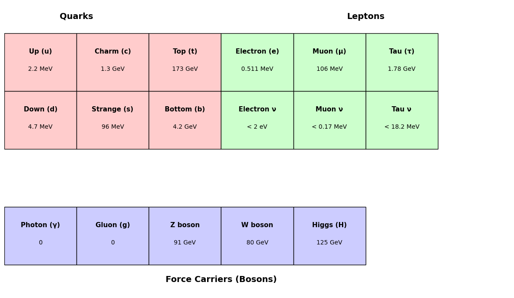

A5.2 The Standard Model of Particle Physics#
A5.2.1 Motivation: A Theory That Actually Works#
The search for the ultimate laws of nature has often felt like chasing shadows. But in particle physics, we have something extraordinary: a theory that works.
The Standard Model of Particle Physics is one of the most successful scientific theories ever constructed. It describes the fundamental particles of nature and how they interact via three of the four known forces—electromagnetic, weak, and strong. It has withstood five decades of experimental tests, from the behavior of particles in accelerators to the composition of the early universe.
And yet—despite its precision—it is incomplete. It does not include gravity. It does not explain dark matter. It does not tell us why the masses and charges of particles are what they are. But within its domain, it is unmatched in power.
In this note, we will explore the structure of the Standard Model: the particles it includes, the forces it describes, and the deep symmetries that hold it together.
A5.2.2 Overview of the Standard Model#
The Standard Model describes:
12 fundamental matter particles (6 quarks, 6 leptons)
4 force carriers (gauge bosons)
1 scalar boson (Higgs)
These particles and their interactions are governed by internal symmetries and quantum fields.
A5.2.3 The Matter Particles: Fermions#
There are two families of matter particles:
Quarks (interact via all forces)
Leptons (do not interact via the strong force)
Each comes in three generations:
Generation |
Quarks |
Leptons |
|---|---|---|
1st |
up (\(u\)), down (\(d\)) |
electron (\(e^-\)), \(\nu_e\) |
2nd |
charm (\(c\)), strange (\(s\)) |
muon (\(\mu^-\)), \(\nu_\mu\) |
3rd |
top (\(t\)), bottom (\(b\)) |
tau (\(\tau^-\)), \(\nu_\tau\) |
All quarks carry color charge and are confined in hadrons.
All charged leptons (\(e\), \(\,u\), \(\tau\)) interact electromagnetically; neutrinos do not.
Only the 1st generation is stable. The others decay via weak interactions.
A5.2.4 Force Carriers: Bosons#
The interactions between particles are mediated by gauge bosons, each associated with a fundamental force:
Force |
Mediator(s) |
Affects |
|---|---|---|
Electromagnetic |
Photon (\(\gamma\)) |
Charged particles |
Strong |
Gluons (\(g\)) |
Quarks (via color charge) |
Weak |
\(W^+\), \(W^-\), \(Z^0\) |
All fermions |
Gravity* |
Graviton (hypothetical) |
Everything (not included in SM) |
The graviton is not part of the Standard Model.
What does “mediated” mean? A fundamental interaction is said to be mediated by a particle when the force arises from the exchange of a virtual boson. This particle carries momentum and energy between other particles, enabling the interaction without direct contact.
Example: Repulsion between two elections:#
This is not due to a field pushing them apart. Instead, they exchange a virtual photon, transferring momentum.
A5.2.5 The Higgs Field and Mass#
All massive particles in the Standard Model acquire their mass through the Higgs mechanism:
The Higgs field permeates all space.
Particles that interact with this field experience “resistance,” which manifests as mass.
The associated quantum particle is the Higgs boson, discovered in 2012.
Each particle’s mass is determined by its coupling strength to the Higgs field. This coupling is a parameter in the theory—not derived from first principles.
A5.2.6 The Structure of the Theory#
What Is a Gauge Group?#
In physics, a gauge group is a mathematical group that describes the symmetry of the laws of nature under local transformations.
“Gauge” refers to redundancy in how fields are described — different configurations can represent the same physics.
The gauge group determines how particles transform and interact.
Each gauge symmetry leads to a corresponding conserved quantity (via Noether’s theorem) and requires a force carrier (gauge boson).
For example:
In electromagnetism, the gauge group is \( U(1) \).
→ Local phase changes in the wavefunction require the introduction of the photon to preserve symmetry.
A gauge group encodes the local symmetry of a field theory.
It determines what kinds of interactions exist, what particles feel them, and what mediating particles (gauge bosons) must exist.
The Gauge Groups of the Standard Model#
The Standard Model is built on a mathematical structure called a gauge theory, which is based on symmetry groups. These groups govern how particles interact with one another through the fundamental forces.
The full gauge group of the Standard Model is:
Each component corresponds to one of the fundamental forces (excluding gravity):
SU(3)\(_C\) – The Strong Interaction#
Governs the strong nuclear force.
“C” stands for color charge.
Describes how quarks interact via gluons.
Quarks come in three “color charges”: red, green, blue.
Gluons are the force carriers, ensuring color is conserved.
This is the basis of Quantum Chromodynamics (QCD).
SU(2)\(_L\) – The Weak Interaction#
Governs the weak nuclear force.
“L” stands for left-handed particles — the weak force only acts on left-handed fermions.
Has three gauge bosons: \(W^+\), \(W^-\), and \(W^0\).
Responsible for processes like beta decay.
U(1)\(_Y\) – Hypercharge#
Describes the hypercharge (\(Y\)), a quantum number related to electric charge and weak interactions.
Initially gives rise to the \(B^0\) boson.
After electroweak symmetry breaking, the \(SU(2)_L\) and \(U(1)_Y\) mix to form:
The photon (\(\gamma\)) of electromagnetism
The Z boson (\(Z^0\)) of the weak interaction
This gives rise to the unified electroweak interaction.
Summary Table#
Gauge Group |
Force |
Carriers |
Acts On |
|---|---|---|---|
\(SU(3)_C\) |
Strong |
Gluons (\(g\)) |
Quarks (color charge) |
\(SU(2)_L\) |
Weak (left-handed) |
\(W^+\), \(W^-\), \(W^0\) |
Left-handed fermions |
\(U(1)_Y\) |
Hypercharge |
\(B^0\) (mixes into \(\gamma\) and \(Z^0\)) |
All fermions |
Takeaway#
The gauge symmetry structure dictates which particles feel which forces, and how they interact. These abstract groups are not just math—they encode the deepest laws of nature currently known.
These symmetries explain:
Charge conservation
Gauge invariance
Force strengths and structures
But they do not explain:
Why these symmetries exist
Why there are three generations
Why the values of the coupling constants and masses are what they are
A5.2.7 The Quantum Field Theories of the Standard Model#
Each force described by the Standard Model corresponds to a specific quantum field theory:
QED (Quantum Electrodynamics): The theory of electromagnetism
→ Arises from the group \(U(1)_{\text{EM}}\), after symmetry breaking
→ Mediated by the photon (\(\gamma\))
→ Applies to all electric harged particlesQCD (Quantum Chromodynamics): The theory of the strong force
→ Based on \(SU(3)_C\)
→ Mediated by gluons
→ Acts on quarks via their color chargeQFD (Quantum Flavordynamics): Less commonly used term for the electroweak theory
→ Based on \(SU(2)_L \times U(1)_Y\), which mixes into \(U(1)_{\text{EM}}\) and \(Z^0\)
→ Mediated by \(W^\pm\), \(Z^0\), and the photon
→ Governs interactions involving flavor charges, such as beta decay
Summary Table#
Theory |
Force |
Gauge Group |
Mediators |
|---|---|---|---|
QED |
Electromagnetic |
\(U(1)_{\text{EM}}\) |
Photon (\(\gamma\)) |
QCD |
Strong |
\(SU(3)_C\) |
Gluons (\(g\)) |
QFD |
Electroweak |
\(SU(2)_L \times U(1)_Y\) |
\(W^\pm\), \(Z^0\), \(\gamma\) |
A5.2.8 Open Questions#
Despite its success, the Standard Model leaves many mysteries unsolved:
Why are there three generations of particles?
What determines the masses of quarks and leptons?
What is dark matter?
Why does the universe contain more matter than antimatter?
How does gravity fit into the quantum picture?
These questions point beyond the Standard Model—to theories of unification, quantum gravity, and physics yet to be discovered.
A5.2.9 Summary#
The Standard Model is our best understanding of particle physics to date.
It organizes matter into quarks and leptons, and interactions via gauge bosons.
The Higgs field gives particles mass.
Its structure is based on deep symmetry principles.
It is powerful, predictive, and incomplete.
The Standard Model is not the end of the story—but it is the beginning of understanding the quantum architecture of the universe.
